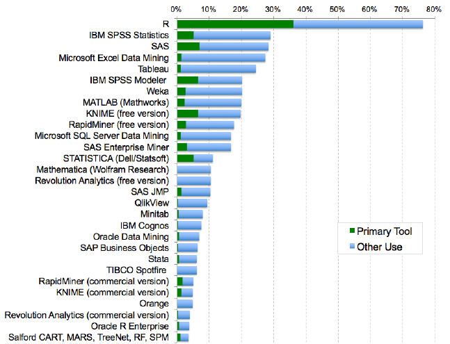
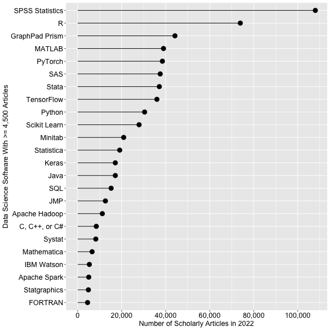
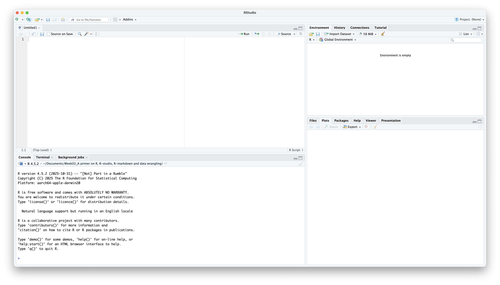

# Load data from multiple sources
hospital_data <- read_csv("hospital_readmissions.csv")
# Analyze and visualize
hospital_data |>
group_by(hospital_name, year) |>
summarize(readmission_rate = mean(readmitted)) |>
ggplot(aes(x = year, y = readmission_rate, color = hospital_name)) +
geom_line() +
labs(title = "30-Day Readmission Trends by Hospital")
# When data updates: just re-run this code!Week 2: R, RStudio, Quarto, and Data Wrangling
1 Introduction
1.1 Why Learn R for Healthcare Analytics?
This week we’re building the foundation for all future analytics work in this course. In this course, we’ll use R for data analysis, so we will cover some basics of R and R-accompanied tools. You might be wondering, why R? Why can’t I just use Excel?
Let’s look at a real scenario:
Scenario: You’re analyzing readmission rates across 50 hospitals with monthly data for 3 years.
1.1.1 With Excel
- Manually copy-paste data from different sources
- Create pivot tables and charts by clicking through menus
- When data updates next month, repeat everything manually
- Hard to document what you did
- Difficult to share your exact methodology
- Risk of copy-paste errors
Drawbacks:
- Not reproducible
- Time-consuming with large data
- Error-prone
- Hard to share methodology
1.1.2 With R
Benefits:
- Reproducible: Same code produces same results every time
- Scalable: Works with 10 rows or 10 million rows
- Documented: Code shows exactly what you did
- Shareable: Colleagues can verify and build on your work
1.2 What You’ll Learn Today
By the end of this session, you will be able to:
- Understand what R, RStudio, and Quarto are and how they work together
- Understand fundamental R concepts: variables, data types, and data structures
- Apply basic data wrangling techniques using the tidyverse
- Create a reproducible analysis document using Quarto
1.3 Session Overview
Part 1: The Tools (R, RStudio, and Quarto)
Part 2: R Basics (Variables, Types, etc.)
Part 3: Data Wrangling with dplyr
Putting It All Together: End-to-end example and key takeaways
Practice: Hands-on exercises with healthcare data
NoteHow You’ll Work Today
You’ll use TWO documents during this session:
- Week02_mynotes.qmd - Your personal learning notebook
- Create this document in Part 1
- Use it to follow along during lecture
- Type code examples as we go through them
- Keep it as your reference for the future
- Week02_practice.qmd - Structured practice activities
- Open this when you see “Try It Yourself!” boxes
- Complete specific tasks with guided exercises
- Check solutions at the end
Workflow: Learn in mynotes → Practice in practice document → Return to mynotes for next topic
2 Part 1: Understanding the Tools
2.1 What is R?

R is a programming language designed specifically for statistical computing and data analysis.
Think of it like this:
- Excel is a tool (spreadsheet)
- R is a language (like English or Spanish)
2.1.1 Why R?
R offers unique advantages for data analytics:
- Free and Open Source: No licensing costs, ever
- Rich Ecosystem of Packages: Thousands of packages for specialized analysis
- General analytics:
dplyr,ggplot2,tidyrfor data manipulation and visualization - Healthcare-specific:
survival,tableone,medicaldatafor clinical analysis - Business analytics:
forecast,caret,mlr3for predictive modeling
- General analytics:
- Reproducibility: Essential for research, compliance, and collaborative work
- Industry Adoption: Used across healthcare, finance, tech, consulting, and research organizations
2.1.2 R’s Growing Popularity
R has become one of the leading tools for data analytics. Here are some key indicators:


Job Market Growth:
- 537% increase in R-related job postings between 2019-2022 (Indeed.com data)
- Growth rate comparable to SQL and Java
- Approximately 24,000 job listings in data science roles (as of 2022)
Academic Adoption:
- 2nd most-cited analytics software in scholarly research (Google Scholar, 2022)
- ~95% of students in advanced statistics courses prefer R
- Majority of new statistics textbooks now feature R examples
Package Ecosystem:
- R added 1,357 new packages in 2015 alone (more than SAS’s entire command library (~1,200 total))
- Over 228,000 functions available across R repositories (2016 data)
- Fastest-growing ecosystem among free analytics tools
Why This Matters for You:
- Learning R gives you access to cutting-edge analytical methods
- Strong and growing demand in the job market
- Free and open-source means you can use it anywhere, anytime
NoteSource
Statistics and graphs from r4stats.com, a comprehensive analysis of data science software popularity trends.
2.2 What is RStudio?

RStudio is an Integrated Development Environment (IDE), a user-friendly workspace for working with R.
Integrated Development Environment (IDE): A software application that combines multiple programming tools into a single interface. Instead of using separate programs for writing code, running it, viewing outputs, and managing files, an IDE brings everything together in one place.
R-Studio includes code editor, variable viewer, file browser, plot viewer, etc.
2.2.1 The RStudio Interface
When you open RStudio, you’ll see four panes:

NoteThe Four Panes of RStudio
- Source Pane (Top-Left): Write and edit your scripts
- This is where you’ll write and save your R code
- Create new files here (R scripts, Quarto documents)
- Console Pane (Bottom-Left): See code execution and results
- Code runs here and displays output
- You can type commands directly here for quick tests
- Environment Pane (Top-Right): View your data and variables
- See all objects you’ve created (data frames, variables, functions)
- Check what’s currently loaded in R’s memory
- Files/Plots Pane (Bottom-Right): Navigate files, view plots, access help
- Browse files in your project folder
- View graphs and visualizations
- Access help documentation
- Manage R packages
2.3 What is Quarto?
Quarto is a scientific publishing system that combines:
- Code (R, Python, etc.)
- Text (formatted with Markdown)
- Output (tables, figures, results)
…all in a single document that can be rendered to HTML, PDF, Word, or presentations.
2.3.1 Why Use Quarto?
Imagine you analyze hospital readmission data and create a report in Word with charts from Excel. Two weeks later, you get updated data. What happens?
Traditional Approach:
- Re-analyze data in Excel
- Re-create all charts
- Copy-paste new charts into Word
- Update text to match new numbers
- Hope you don’t miss anything!
With Quarto:
- Update your data file
- Click “Render”
- Done! Everything updates automatically
2.3.2 Quarto Document Structure
A Quarto document has three parts:
2.3.2.1 1. YAML Header (Metadata)
---
title: "My Analysis"
author: "Your Name"
date: today
format: html
---This controls document settings and appearance.
2.3.2.2 2. Markdown Text (Narrative)
## Introduction
This analysis examines **patient satisfaction** across three hospitals.
We found that:
- Wait times vary significantly
- Satisfaction decreases with longer waitsThis creates formatted text (headings, bold, lists, etc.).
2.3.2.3 3. Code Chunks (Analysis)
```{r}
# Calculate average satisfaction
mean(patient_data$satisfaction_score)
```This executes R code and shows results in your document.
2.3.3 Code Chunk Options
You can control how code chunks behave using options. Add options at the top of a code chunk with #|:
```{r}
#| echo: false # Don't show the code, only the output
#| eval: true # Run this code (true is default)
#| warning: false # Hide warnings
#| message: false # Hide messages
# Your code here
```Common options:
echo: false: Hide the code, show only results (good for reports to non-technical audience)eval: false: Show the code but don’t run it (good for examples)include: false: Run the code but hide both code and output (good for setup)warning: false: Suppress warning messagesmessage: false: Suppress package loading messagesfig-width: 8andfig-height: 6: Control plot dimensions (sizes)
Example use case:
#| echo: false
#| message: false
# This chunk loads packages silently
library(tidyverse)2.3.4 Inline R Code
You can insert R results directly into your text using `r ` with R code inside the backticks:
Today's date is `r Sys.Date()`.
The result of 2 + 2 is `r 2 + 2`.When rendered, these become:
- “Today’s date is 2026-01-14”
- “The result of 2 + 2 is 4”.
Example with data:
Let’s create a simple dataset about patient age:
patient_age <- c(44, 32, 56, 43, 67, 78, 13, 25, 47)If we would like to describe the average age of the patients in text using the expression below:
The average patient age is `r mean(patient_age)` years.We have the rendered output like:
- The average patient age is 45 years.
Why this is powerful?:
- When data updates, all numbers in your report update automatically!
2.3.5 Creating Your First Quarto Document
Let’s create a Quarto document that you’ll use throughout today’s lesson. This will become your personal reference document!
In RStudio:
- File → New File → Quarto Document
- Title: “Week 2 - My R Learning Notes”
- Author: Your name
- Format: HTML
- Click “Create”
- Save it as
Week02_mynotes.qmd(File → Save)
ImportantTry It Yourself! (5 minutes)
Pause here and create your learning document:
- Follow the steps above to create
Week02_mynotes.qmd - Click “Render” to verify your setup works
- Keep this document open - you’ll add code to it as we go through Parts 2-4
Important workflow tips:
- You can run individual code line with Cmd/Ctrl + Enter (no need to render every time!)
- You can run individual code chunk line with Cmd/Ctrl + Shift + Enter (no need to render every time!)
- Add new code chunks with Cmd/Ctrl + Option/Alt + I
- Only click “Render” when you want to see the final formatted document
This document will become your complete Week 2 reference with all the code you practice today.
After 5 minutes, we’ll continue with Part 2: R Basics.
3 Part 2: R Basics
3.1 Your First R Commands
Let’s start with simple operations. You can type these in the Console or in a code chunk.
3.1.1 R as a Calculator
# Addition
5 + 3[1] 8# Subtraction
10 - 4[1] 6# Multiplication
6 * 7[1] 42# Division
20 / 4[1] 5# Exponentiation (power)
2^3[1] 8
TipComments: Your Code’s Documentation
The # symbol creates a comment - text that R ignores but humans read. Use comments liberally!
Bad (no context):
x <- 150
y <- 4.5
z <- x * yGood (explains the “why”):
patient_count <- 150 # Current cohort size
average_los <- 4.5 # Mean length of stay in days
total_patient_days <- patient_count * average_losTip: Comment the “why” and “what,” not the “how.” Your code shows how it works; comments explain why you’re doing it.
3.1.2 Creating Variables
Variables store values for later use. Use the assignment operator <-.
# Store values
patient_count <- 150
average_los <- 4.5 # LOS = Length of Stay
# View values
patient_count[1] 150average_los[1] 4.5# Use in calculations
total_patient_days <- patient_count * average_los
total_patient_days[1] 675
TipVariable Naming Rules
- ✅ Good names:
patient_count,average_los,readmission_rate - ❌ Avoid: spaces (
patient count), special characters (patient#), starting with numbers (2patients)
Best practice: Use descriptive names with underscores
3.2 Data Types
R treats different types of data differently. Understanding data types is crucial for analysis.
3.2.1 1. Numeric
Numbers with or without decimals:
# Integer-like
num_beds <- 200
class(num_beds) # Check the type[1] "numeric"# Decimal
occupancy_rate <- 0.85
class(occupancy_rate)[1] "numeric"# Scientific notation for very large/small numbers
population <- 3.3e8 # 330,000,000
population[1] 3.3e+08# More scientific notation examples
large_number <- 1.5e6 # 1.5 × 10^6 = 1,500,000
small_number <- 2.5e-4 # 2.5 × 10^-4 = 0.00025
large_number[1] 1500000small_number[1] 0.00025
NoteUnderstanding Scientific Notation
Scientific notation uses e to represent “times 10 to the power of”:
3.3e8means 3.3 × 108 = 3.3 × 100,000,000 = 330,000,0001.5e6means 1.5 × 106 = 1.5 × 1,000,000 = 1,500,0002.5e-4means 2.5 × 10-4 = 2.5 × 0.0001 = 0.00025
The number after e:
- Positive (
e8): Move decimal point 8 places to the right (larger number) - Negative (
e-4): Move decimal point 4 places to the left (smaller number)
When R shows scientific notation: R automatically displays very large or very small numbers in scientific notation for readability.
Numeric is Used for: Age, costs, lab values, any quantitative measure
3.2.2 2. Character (Text)
Text data, always in quotes:
# Single or double quotes work
hospital_name <- "City General Hospital"
patient_id <- "P-2024-00123"
# Check the type
class(hospital_name)[1] "character"# Numbers can be characters!
age_text <- "45"
class(age_text) # "character" not "numeric"![1] "character"Important: You CAN’T do math with character data, even if it contains numbers!
# This won't work:
# age_text + 5 # ERROR!
# Must convert first:
age_numeric <- as.numeric(age_text) # Convert Character as Numeric
age_numeric + 5 # Now it works![1] 50Use for: Names, IDs, addresses, diagnosis codes, any text
3.2.3 3. Logical (TRUE/FALSE)
Only two values: TRUE or FALSE (must be ALL CAPS, no quotes):
# Create logical values directly
is_emergency <- TRUE
has_insurance <- FALSEUse for: Yes/No questions, filtering data, conditions
3.2.3.1 Comparison Operators
Comparison operators evaluate conditions and return TRUE or FALSE:
age <- 65
glucose <- 140
# Greater than
glucose > 126 # TRUE[1] TRUE# Less than
age < 18 # FALSE[1] FALSE# Greater than or equal to
age >= 65 # TRUE[1] TRUE# Less than or equal to
age <= 70 # TRUE[1] TRUE# Equal to (use ==, not =)
age == 65 # TRUE[1] TRUE# Not equal to
age != 50 # TRUE[1] TRUE
WarningCommon Mistake:
= vs ==
- Use
<-or=for assignment:age <- 65(store value) - Use
==for comparison:age == 65(test equality)
age = 65 # Assignment: set age to 65
age == 65 # Comparison: is age equal to 65?3.2.3.2 Logical Operators
Combine multiple conditions using logical operators:
patient_age <- 72
systolic_bp <- 145
has_diabetes <- TRUE
# AND operator (&): Both conditions must be TRUE
patient_age > 65 & systolic_bp > 140 # TRUE (both are true)[1] TRUEpatient_age > 65 & systolic_bp < 120 # FALSE (one is false)[1] FALSE# OR operator (|): At least one condition must be TRUE
patient_age < 18 | patient_age >= 65 # TRUE (second is true)[1] TRUEpatient_age < 18 | systolic_bp < 120 # FALSE (both are false)[1] FALSE# NOT operator (!): Reverses TRUE/FALSE
!has_diabetes # FALSE (opposite of TRUE)[1] FALSE!(patient_age > 65) # FALSE (opposite of TRUE)[1] FALSE3.2.3.3 Combining Conditions
Use parentheses () to make complex conditions clearer:
# High risk = (age > 65 OR diabetes) AND high blood pressure
high_risk <- (patient_age > 65 | has_diabetes) & (systolic_bp > 140)
high_risk # TRUE[1] TRUE# Pediatric or geriatric
special_population <- (patient_age < 18) | (patient_age >= 65)
special_population # TRUE[1] TRUEWhy this matters: You’ll use these operators constantly when filtering data with filter() in Part 3!
3.2.4 4. Factor (Categories)
Factors represent categorical data with predefined levels:
# Character version (just text)
departments_char <- c("ER", "ICU", "Surgery", "ER", "ICU")
departments_char[1] "ER" "ICU" "Surgery" "ER" "ICU" # Factor version (categories with levels)
departments_factor <- factor(c("ER", "ICU", "Surgery", "ER", "ICU"))
departments_factor # Shows levels at bottom[1] ER ICU Surgery ER ICU
Levels: ER ICU Surgery# See the unique categories
levels(departments_factor)[1] "ER" "ICU" "Surgery"Why use factors?
- Required for many statistical analyses
- Control the order of categories (important for graphs!)
- More memory-efficient than character
Ordered factors for data with natural order:
# Severity has a natural order
severity <- factor(
c("Mild", "Moderate", "Severe", "Mild", "Severe"),
levels = c("Mild", "Moderate", "Severe"), # Specify order
ordered = TRUE # Mark as ordered
)
severity # Notice: Mild < Moderate < Severe[1] Mild Moderate Severe Mild Severe
Levels: Mild < Moderate < SevereUse for: Department, insurance type, severity levels, any categorical data
TipQuick Checkpoint: Understanding Data Types
Before moving on, make sure you can answer these:
- What type is
42? → numeric - What type is
"42"? → character - What type is
TRUE? → logical - What symbols do you use to test if age equals 65? →
== - How do you combine multiple values into a vector? →
c()
If any of these are unclear, review the sections above or ask now!
ImportantTry It Yourself! (5 minutes)
Pause here! Open Week02_practice.qmd and complete:
- Task 1.1: Creating variables with different data types
This will help you practice creating variables and understanding data types.
After 5 minutes, we’ll continue with data structures.
3.3 Data Structures
3.3.1 Vectors: One-Dimensional Data
A vector is a sequence of elements of the same type:
# Create vectors with c() - "combine" function
ages <- c(45, 67, 32, 58, 71)
ages[1] 45 67 32 58 71departments <- c("ER", "ICU", "Surgery", "ER", "Pediatrics")
departments[1] "ER" "ICU" "Surgery" "ER" "Pediatrics"# Check length
length(ages)[1] 5# Access elements by position (starts at 1!)
ages[1] # First element[1] 45ages[3] # Third element[1] 32ages[1:3] # Elements 1 through 3[1] 45 67 32# Vector operations
ages + 1 # Adds 1 to each element[1] 46 68 33 59 72mean(ages) # Calculate average[1] 54.6sum(ages) # Calculate sum[1] 273Key point: Vectors can only contain one data type!
# Mixing types - R converts to common type
mixed <- c(25, "years", 100)
mixed # Everything becomes character: "25" "years" "100"[1] "25" "years" "100" 3.3.2 Data Frames: Two-Dimensional Data
A data frame is a table where:
- Each column is a vector (variable)
- Each row is an observation
- Columns can have different data types (but within the column, elements are the same type)
This is how most healthcare data is organized!
# Create a data frame
patients <- data.frame(
patient_id = c(101, 102, 103, 104, 105), # patient's unique ID
age = c(45, 67, 32, 58, 71), # patient's age
gender = c("F", "M", "F", "M", "F"), # patient's gender
department = c("ER", "ICU", "Surgery", "ER", "Pediatrics"), # hospoital deparment the patient assigned
los = c(2, 7, 3, 1, 4), # Length of stay
readmitted = c(FALSE, TRUE, FALSE, FALSE, TRUE)
)
# View the data frame
patients patient_id age gender department los readmitted
1 101 45 F ER 2 FALSE
2 102 67 M ICU 7 TRUE
3 103 32 F Surgery 3 FALSE
4 104 58 M ER 1 FALSE
5 105 71 F Pediatrics 4 TRUE# Check structure
str(patients)'data.frame': 5 obs. of 6 variables:
$ patient_id: num 101 102 103 104 105
$ age : num 45 67 32 58 71
$ gender : chr "F" "M" "F" "M" ...
$ department: chr "ER" "ICU" "Surgery" "ER" ...
$ los : num 2 7 3 1 4
$ readmitted: logi FALSE TRUE FALSE FALSE TRUE# Access columns
patients$age # Dollar sign notation[1] 45 67 32 58 71patients[, "department"] # Bracket notation[1] "ER" "ICU" "Surgery" "ER" "Pediatrics"# Access rows
patients[1, ] # First row patient_id age gender department los readmitted
1 101 45 F ER 2 FALSEpatients[1:3, ] # First three rows patient_id age gender department los readmitted
1 101 45 F ER 2 FALSE
2 102 67 M ICU 7 TRUE
3 103 32 F Surgery 3 FALSE# Access specific cell
patients[2, "gender"] # Row 2, column "gender"[1] "M"
NoteHow to Practice: Working in Your Quarto Document
You should be working in Week02_mynotes.qmd (the document you created earlier).
How to run code:
- Type code in a code chunk (use Cmd/Ctrl + Option/Alt + I to create new chunks)
- Run the current line or selection with Cmd/Ctrl + Enter
- You don’t need to click “Render” after every change!
Think of it this way:
- While learning: Run code chunks interactively (Cmd/Ctrl + Shift + Enter)
- To see final result: Click “Render” to create a beautiful formatted document
- At end of session: You’ll have a complete reference document with all your learning
Tip: You can also experiment in the Console for quick tests, but adding code to your Quarto document ensures you keep a record of what you learned.
3.4 Loading Data
In real work, you’ll load data from files rather than creating it manually.
3.4.1 Understanding R Packages
Before we load data, you need to understand packages - one of R’s most powerful features.
3.4.1.1 What Are Packages?
Packages are collections of functions, data, and documentation created by the R community. Think of them as apps for your phone:
- Base R = Your phone’s built-in apps (calculator, clock)
- Packages = Apps you download (Instagram, Spotify, etc.)
R comes with basic functions, but packages add thousands of specialized capabilities!
NotePhone App Analogy
| Phone | R |
|---|---|
| Phone comes with built-in apps | R comes with base functions |
| Download app from App Store (once) | Install package with install.packages() (once) |
| Open app to use it (every time) | Load package with library() (every session) |
| Apps stay on phone after download | Packages stay installed after installation |
3.4.1.2 Installing Packages
You only need to install a package once (like downloading an app):
# Install a single package
install.packages("tidyverse")
# Install multiple packages at once
install.packages(c("readxl", "ggplot2", "dplyr"))
ImportantInstallation Notes
- Put package names in quotes:
install.packages("tidyverse") - Installation happens once - you don’t need to reinstall every time you use R
- If you get permission errors, you may need to run RStudio as administrator
3.4.1.3 Loading Packages
After installation, you must load a package in each R session before using it (like opening an app):
# Load the tidyverse package
library(tidyverse)
# Now you can use tidyverse functions like read_csv()
WarningCommon Mistake: Forgetting to Load
Even if you’ve installed a package, you must load it with library() at the start of each session!
Error: Error: could not find function "read_csv"
Solution: Run library(tidyverse) first
3.4.1.4 What is the Tidyverse?
The tidyverse is a collection of packages designed to work together for data science:
When you run library(tidyverse), it loads 8 core packages:
- readr: Read data files (CSV, TSV, etc.)
- dplyr: Manipulate data (filter, select, summarize)
- ggplot2: Create visualizations
- tidyr: Reshape data
- tibble: Enhanced data frames
- stringr: Work with text
- forcats: Work with factors
- purrr: Functional programming
For this course, we’ll primarily use readr and dplyr.
TipBest Practice: Load Packages at the Top
In your Quarto documents, always load packages in the first code chunk:
# Load required packages
library(tidyverse)
# Then your analysis code...This makes it clear what packages your analysis needs.
3.4.2 Reading CSV Files
CSV (Comma-Separated Values) is the most common data format:
# Load tidyverse (includes readr package)
library(tidyverse)
# Read a CSV file
patient_data <- read_csv("hospital_data.csv")
# View the data
head(patient_data) # First 6 rows
View(patient_data) # Open in spreadsheet viewerCommon issues:
WarningFile Not Found Error
If you get Error: 'hospital_data.csv' does not exist, check:
- Is the file in your working directory?
- Use
getwd()to see your current directory - Use
list.files()to see what files are there
- Use
- Is the path correct?
- Use full path:
read_csv("/Users/yourname/Documents/hospital_data.csv") - Or use RStudio Projects to organize your work
- Use full path:
3.4.3 Other Common Formats
# Excel files (need readxl package)
library(readxl)
data <- read_excel("hospital_data.xlsx")
# Tab-separated files
data <- read_tsv("hospital_data.txt")
# R data files
data <- readRDS("hospital_data.rds")3.5 Getting Help
R has extensive built-in help. Use these when you’re stuck:
# Get help on a specific function
?read_csv
?filter
?mean
# Search for help on a topic
??regression
??"missing values"
# See examples
example(mean)Tip: Help pages show:
- Description: What the function does
- Usage: How to call it
- Arguments: What options are available
- Examples: Working code you can try
4 Part 3: Data Wrangling with dplyr
4.1 From Data Structures to Data Manipulation
Now that you know how to create and access data frames, let’s learn how to actually manipulate them. This is where R becomes incredibly powerful for data analysis.
What you’ll learn in this section:
- How to select only the columns you need
- How to filter rows based on conditions
- How to create new calculated fields
- How to summarize data by groups
- How to combine all these operations into powerful analysis pipelines
This is the core skill of data wrangling - transforming raw data into insights.
4.2 Introduction to the Tidyverse
The tidyverse is a collection of R packages designed for data science with a common philosophy and grammar.
Why Tidyverse?
Traditional R (hard to read):
round(mean(subset(patients, age > 50)$los), 2)Tidyverse (reads like English):
patients |>
filter(age > 50) |>
summarize(mean_los = round(mean(los), 2))Much clearer!
4.3 The Pipe Operator: |>
- The pipe operator
|>passes output from one function to the next. (or often you see it as%>%)
Read it as “and then”:
# Without pipe (hard to read, nested)
round(mean(c(1, 2, 3, 4, 5)), 2)[1] 3# With pipe (easy to read, sequential)
c(1, 2, 3, 4, 5) |>
mean() |>
round(2)[1] 3Think: “Take this data, and then do this, and then do that.”
4.4 Sample Dataset
Let’s create a healthcare dataset to practice with:
# Set seed for reproducibility
set.seed(2026)
# Create sample data (simplified version)
healthcare_data <- tibble(
patient_id = 1:100,
age = sample(18:90, 100, replace = TRUE),
gender = sample(c("Male", "Female"), 100, replace = TRUE),
department = sample(c("Emergency", "Cardiology", "Orthopedics"),
100, replace = TRUE),
los = sample(1:14, 100, replace = TRUE),
total_charges = round(runif(100, 1000, 50000), 2),
readmitted_30day = sample(c(TRUE, FALSE), 100, replace = TRUE, prob = c(0.15, 0.85))
)
# View first few rows
head(healthcare_data)# A tibble: 6 × 7
patient_id age gender department los total_charges readmitted_30day
<int> <int> <chr> <chr> <int> <dbl> <lgl>
1 1 55 Female Orthopedics 5 37342. FALSE
2 2 62 Male Cardiology 10 22805. TRUE
3 3 53 Female Cardiology 12 13948. TRUE
4 4 65 Female Cardiology 10 23089. FALSE
5 5 22 Female Emergency 9 22334. TRUE
6 6 48 Female Emergency 7 9200. FALSE 4.5 Core dplyr Functions
4.5.1 1. select() - Choose Columns
- Pick which variables you want to keep:
# Select specific columns
healthcare_data |>
select(patient_id, age, department, total_charges)# A tibble: 100 × 4
patient_id age department total_charges
<int> <int> <chr> <dbl>
1 1 55 Orthopedics 37342.
2 2 62 Cardiology 22805.
3 3 53 Cardiology 13948.
4 4 65 Cardiology 23089.
5 5 22 Emergency 22334.
6 6 48 Emergency 9200.
7 7 61 Cardiology 12798.
8 8 75 Orthopedics 25872.
9 9 36 Emergency 4464.
10 10 27 Emergency 47778.
# ℹ 90 more rows# Select a range
healthcare_data |>
select(patient_id:department)# A tibble: 100 × 4
patient_id age gender department
<int> <int> <chr> <chr>
1 1 55 Female Orthopedics
2 2 62 Male Cardiology
3 3 53 Female Cardiology
4 4 65 Female Cardiology
5 5 22 Female Emergency
6 6 48 Female Emergency
7 7 61 Male Cardiology
8 8 75 Female Orthopedics
9 9 36 Male Emergency
10 10 27 Female Emergency
# ℹ 90 more rows# Remove columns with minus sign
healthcare_data |>
select(-readmitted_30day)# A tibble: 100 × 6
patient_id age gender department los total_charges
<int> <int> <chr> <chr> <int> <dbl>
1 1 55 Female Orthopedics 5 37342.
2 2 62 Male Cardiology 10 22805.
3 3 53 Female Cardiology 12 13948.
4 4 65 Female Cardiology 10 23089.
5 5 22 Female Emergency 9 22334.
6 6 48 Female Emergency 7 9200.
7 7 61 Male Cardiology 11 12798.
8 8 75 Female Orthopedics 9 25872.
9 9 36 Male Emergency 9 4464.
10 10 27 Female Emergency 13 47778.
# ℹ 90 more rows# Select by pattern
healthcare_data |>
select(starts_with("total"))# A tibble: 100 × 1
total_charges
<dbl>
1 37342.
2 22805.
3 13948.
4 23089.
5 22334.
6 9200.
7 12798.
8 25872.
9 4464.
10 47778.
# ℹ 90 more rowsWhen to use: Simplify your data by keeping only relevant columns
4.5.2 2. filter() - Choose Rows
- Select rows based on conditions:
# Single condition
healthcare_data |>
filter(age >= 65)# A tibble: 38 × 7
patient_id age gender department los total_charges readmitted_30day
<int> <int> <chr> <chr> <int> <dbl> <lgl>
1 4 65 Female Cardiology 10 23089. FALSE
2 8 75 Female Orthopedics 9 25872. FALSE
3 11 71 Male Cardiology 2 9210. FALSE
4 15 73 Female Orthopedics 2 8537. FALSE
5 16 65 Male Emergency 9 32239. TRUE
6 21 78 Female Orthopedics 13 13026. TRUE
7 23 83 Female Cardiology 14 15269. FALSE
8 25 78 Female Emergency 7 3272. FALSE
9 27 90 Male Cardiology 13 6365. FALSE
10 28 88 Male Cardiology 1 34150. TRUE
# ℹ 28 more rows# Multiple conditions (AND)
healthcare_data |>
filter(department == "Cardiology", los > 5)# A tibble: 30 × 7
patient_id age gender department los total_charges readmitted_30day
<int> <int> <chr> <chr> <int> <dbl> <lgl>
1 2 62 Male Cardiology 10 22805. TRUE
2 3 53 Female Cardiology 12 13948. TRUE
3 4 65 Female Cardiology 10 23089. FALSE
4 7 61 Male Cardiology 11 12798. FALSE
5 13 51 Female Cardiology 8 19894. FALSE
6 18 29 Female Cardiology 8 20714. FALSE
7 23 83 Female Cardiology 14 15269. FALSE
8 27 90 Male Cardiology 13 6365. FALSE
9 33 46 Female Cardiology 12 45392. FALSE
10 36 34 Female Cardiology 14 36882. FALSE
# ℹ 20 more rows# OR condition
healthcare_data |>
filter(department == "Emergency" | department == "Cardiology")# A tibble: 69 × 7
patient_id age gender department los total_charges readmitted_30day
<int> <int> <chr> <chr> <int> <dbl> <lgl>
1 2 62 Male Cardiology 10 22805. TRUE
2 3 53 Female Cardiology 12 13948. TRUE
3 4 65 Female Cardiology 10 23089. FALSE
4 5 22 Female Emergency 9 22334. TRUE
5 6 48 Female Emergency 7 9200. FALSE
6 7 61 Male Cardiology 11 12798. FALSE
7 9 36 Male Emergency 9 4464. TRUE
8 10 27 Female Emergency 13 47778. FALSE
9 11 71 Male Cardiology 2 9210. FALSE
10 12 35 Male Cardiology 2 40795. FALSE
# ℹ 59 more rows# Using %in% for multiple values
healthcare_data |>
filter(department %in% c("Emergency", "Cardiology"))# A tibble: 69 × 7
patient_id age gender department los total_charges readmitted_30day
<int> <int> <chr> <chr> <int> <dbl> <lgl>
1 2 62 Male Cardiology 10 22805. TRUE
2 3 53 Female Cardiology 12 13948. TRUE
3 4 65 Female Cardiology 10 23089. FALSE
4 5 22 Female Emergency 9 22334. TRUE
5 6 48 Female Emergency 7 9200. FALSE
6 7 61 Male Cardiology 11 12798. FALSE
7 9 36 Male Emergency 9 4464. TRUE
8 10 27 Female Emergency 13 47778. FALSE
9 11 71 Male Cardiology 2 9210. FALSE
10 12 35 Male Cardiology 2 40795. FALSE
# ℹ 59 more rowsWhen to use: Focus on specific patient groups (subgroups) or criteria
ImportantTry It Yourself! (5 minutes)
Pause here! Open Week02_practice.qmd and complete:
- Task 3.1: Select specific columns
- Task 3.2: Filter rows based on conditions
This will help you practice choosing the data you need.
After 5 minutes, we’ll continue with creating new columns.
4.5.3 3. mutate() - Create or Modify Columns
- Add new variables or transform existing ones:
# Create new column
healthcare_data |>
mutate(cost_per_day = total_charges / los) |>
select(patient_id, total_charges, los, cost_per_day)# A tibble: 100 × 4
patient_id total_charges los cost_per_day
<int> <dbl> <int> <dbl>
1 1 37342. 5 7468.
2 2 22805. 10 2281.
3 3 13948. 12 1162.
4 4 23089. 10 2309.
5 5 22334. 9 2482.
6 6 9200. 7 1314.
7 7 12798. 11 1163.
8 8 25872. 9 2875.
9 9 4464. 9 496.
10 10 47778. 13 3675.
# ℹ 90 more rows# Create age groups
healthcare_data |>
mutate(
age_group = case_when(
age < 18 ~ "Pediatric",
age < 65 ~ "Adult",
TRUE ~ "Senior" # TRUE means "everything else"
)
) |>
select(patient_id, age, age_group)# A tibble: 100 × 3
patient_id age age_group
<int> <int> <chr>
1 1 55 Adult
2 2 62 Adult
3 3 53 Adult
4 4 65 Senior
5 5 22 Adult
6 6 48 Adult
7 7 61 Adult
8 8 75 Senior
9 9 36 Adult
10 10 27 Adult
# ℹ 90 more rowsWhen to use: Calculate new metrics or categorize continuous variables
4.5.4 4. arrange() - Sort Rows
- Sort data by one or more variables:
# Sort by age (ascending)
healthcare_data |>
arrange(age) |>
select(patient_id, age, department)# A tibble: 100 × 3
patient_id age department
<int> <int> <chr>
1 58 18 Emergency
2 19 20 Emergency
3 40 20 Emergency
4 69 20 Emergency
5 52 21 Emergency
6 5 22 Emergency
7 26 22 Emergency
8 22 25 Emergency
9 37 25 Cardiology
10 53 25 Cardiology
# ℹ 90 more rows# Sort descending
healthcare_data |>
arrange(desc(total_charges)) |>
select(patient_id, total_charges)# A tibble: 100 × 2
patient_id total_charges
<int> <dbl>
1 73 48983.
2 10 47778.
3 90 47621.
4 75 46964.
5 38 45739.
6 33 45392.
7 60 45150.
8 52 45104.
9 56 44216.
10 66 44011.
# ℹ 90 more rows# Sort by multiple columns
healthcare_data |>
arrange(department, desc(los)) |>
select(patient_id, department, los)# A tibble: 100 × 3
patient_id department los
<int> <chr> <int>
1 23 Cardiology 14
2 36 Cardiology 14
3 53 Cardiology 14
4 74 Cardiology 14
5 27 Cardiology 13
6 61 Cardiology 13
7 75 Cardiology 13
8 3 Cardiology 12
9 33 Cardiology 12
10 47 Cardiology 12
# ℹ 90 more rowsWhen to use: Find top/bottom values, organize data for presentation
ImportantTry It Yourself! (5 minutes)
Pause here! Open Week02_practice.qmd and complete:
- Task 3.3: Create new columns with
mutate() - Task 3.4: Sort data with
arrange()
This will help you practice creating calculated fields and sorting data.
After 5 minutes, we’ll learn how to calculate summary statistics.
NoteTake a Breath!
You’ve just learned four powerful data manipulation functions in quick succession:
select()- choose columnsfilter()- choose rowsmutate()- create columnsarrange()- sort
Take 30 seconds to stretch, shake out your hands, and breathe. Data wrangling is mentally intensive, so that’s completely normal!
Next up: The two most powerful functions, summarize() and group_by(), which will let you calculate statistics and analyze by groups.
TipQuick Checkpoint: Core dplyr Functions
Before continuing, verify you understand:
- Which function picks columns? →
select() - Which function picks rows based on conditions? →
filter() - Which function creates new columns? →
mutate() - What does
|>do? → Passes output from one function to the next - How do you sort in descending order? →
arrange(desc(variable))
If you’re confused about any function, now is the time to ask!
4.5.5 5. summarize() - Calculate Statistics
- Reduce data to summary values:
# Single statistic - calculate one summary value
healthcare_data |>
summarize(mean_age = mean(age))# A tibble: 1 × 1
mean_age
<dbl>
1 55.1# Multiple statistics - calculate several summaries at once
healthcare_data |>
summarize(
total_patients = n(), # n() counts the number of rows
mean_age = mean(age), # mean() calculates average
mean_charges = mean(total_charges),
readmit_rate = mean(readmitted_30day) # mean() on logical: TRUE=1, FALSE=0, so this gives proportion
)# A tibble: 1 × 4
total_patients mean_age mean_charges readmit_rate
<int> <dbl> <dbl> <dbl>
1 100 55.1 24341. 0.19
TipUnderstanding
n() and Summary Functions
n(): Counts the number of rows (observations)
n()= total count, no arguments needed- Useful for: “How many patients?”, “How many observations?”
mean() with logical values: Calculates proportions
mean(readmitted_30day)where values are TRUE/FALSE- R treats TRUE as 1 and FALSE as 0
- So
mean()gives you the proportion of TRUE values (i.e., readmission rate)
Other useful summary functions:
median(),sd()(standard deviation),min(),max(),sum()
When to use: Get overall statistics, create summary tables
4.5.6 6. group_by() - Group Operations
- This is where dplyr becomes powerful! Group data before summarizing:
# Summary by department - calculate statistics for EACH department separately
healthcare_data |>
group_by(department) |> # Group by department first
summarize( # Then calculate summaries for each group
patient_count = n(), # Count patients in each department
mean_age = mean(age), # Average age in each department
mean_los = mean(los), # Average length of stay in each department
mean_charges = mean(total_charges), # Average charges in each department
readmit_rate = mean(readmitted_30day) # Readmission rate in each department
) |>
arrange(desc(mean_charges)) # Sort by highest charges first# A tibble: 3 × 6
department patient_count mean_age mean_los mean_charges readmit_rate
<chr> <int> <dbl> <dbl> <dbl> <dbl>
1 Orthopedics 31 59.5 7.16 24836. 0.194
2 Cardiology 40 57.2 8.43 24252. 0.125
3 Emergency 29 47.7 7.83 23935. 0.276
NoteHow
group_by() Works
Without group_by():
summarize()calculates one value across all data- Example: mean age of all patients = 52.3 years
With group_by(department):
summarize()calculates separate values for each department- Example: mean age in ER = 45, mean age in ICU = 67, etc.
Think: “Calculate statistics separately for each group”
Real-world insight: This analysis quickly shows which departments have highest costs and readmission rates!
4.6 Combining Operations
- The power of
dplyris combining multiple operations:
# Complex analysis in one pipeline
healthcare_data |>
filter(age >= 50) |> # Focus on older patients, 50+
mutate(high_cost = total_charges > 25000) |> # Flag expensive cases (if greater than 25000, TRUE, otherwise FALSE)
group_by(department, high_cost) |> # Group by department and cost
summarize(
count = n(),
avg_los = round(mean(los), 1),
.groups = "drop" # Remove grouping structure after summarizing
) |>
arrange(department, desc(high_cost))# A tibble: 6 × 4
department high_cost count avg_los
<chr> <lgl> <int> <dbl>
1 Cardiology TRUE 9 7.3
2 Cardiology FALSE 16 8.8
3 Emergency TRUE 5 6.6
4 Emergency FALSE 8 8.2
5 Orthopedics TRUE 11 5.1
6 Orthopedics FALSE 11 9 What this tells us: How many high-cost vs. regular-cost patients in each department, and their average length of stay.
NoteUnderstanding
.groups = "drop"
When you use group_by() with multiple variables, the data stays “grouped” after summarize(). This can cause unexpected behavior in later operations.
.groups options:
"drop": Remove all grouping (recommended for most cases)"drop_last": Keep all groups except the last one"keep": Keep the grouping structure
Why use .groups = "drop"?
- Makes the output a regular (ungrouped) data frame
- Prevents grouping from affecting subsequent operations like
arrange() - Clearer intent in your code
If you don’t specify .groups, dplyr will show a message reminding you to choose. Using .groups = "drop" silences this message and makes your intention clear.
ImportantTry It Yourself! (5 minutes)
Pause here! Open Week02_practice.qmd and complete:
- Task 3.6: Group by and summarize
This will help you practice the powerful group_by() + summarize() pattern.
After 5 minutes, we’ll continue with combining operations and wrap up.
4.7 Handling Missing Values
- Real (healthcare) data often has missing values (in R, they are filled with
NA):
# Create data with missing values
patient_vitals <- tibble(
patient_id = 1:5,
blood_pressure = c(120, 135, NA, 142, NA),
heart_rate = c(72, 85, 78, NA, 65)
)
patient_vitals# A tibble: 5 × 3
patient_id blood_pressure heart_rate
<int> <dbl> <dbl>
1 1 120 72
2 2 135 85
3 3 NA 78
4 4 142 NA
5 5 NA 65# Count NAs
patient_vitals |>
summarize(
bp_missing = sum(is.na(blood_pressure)), # Summing the number of NAs in boold_pressure
hr_missing = sum(is.na(heart_rate)) # Summing the number of NAs in heart_rate
)# A tibble: 1 × 2
bp_missing hr_missing
<int> <int>
1 2 1# Calculate mean (NAs cause problems!)
mean(patient_vitals$blood_pressure) # Returns NA[1] NA# Remove NAs from calculation
mean(patient_vitals$blood_pressure, na.rm = TRUE) # Works! (na.rm is the key!)[1] 132.3333# Remove rows with NAs
patient_vitals |>
drop_na() # Removes rows with any NA# A tibble: 2 × 3
patient_id blood_pressure heart_rate
<int> <dbl> <dbl>
1 1 120 72
2 2 135 85# Remove rows with NA in specific column
patient_vitals |>
drop_na(blood_pressure)# A tibble: 3 × 3
patient_id blood_pressure heart_rate
<int> <dbl> <dbl>
1 1 120 72
2 2 135 85
3 4 142 NA
WarningMissing Data Caution
Always investigate WHY data is missing before removing it! Missing data may not be random and could bias your analysis.
5 Putting It All Together
5.1 End-to-End Example: Readmission Analysis
Let’s combine everything into a realistic analysis:
Question: Which departments have the highest readmission rates, and does this vary by patient age?
Let’s run the code below to add age_group variable that indicates age categories:
# Step 1: Prepare data
healthcare_data_clean <- healthcare_data |>
mutate(
age_group = case_when(
age < 40 ~ "Under 40",
age < 65 ~ "40-64",
TRUE ~ "65+"
),
age_group = factor(age_group, levels = c("Under 40", "40-64", "65+"))
)Now let’s check readmission rates across departments (department) and age groups (age_group) using dplyr:
# Step 2: Analyze by department and age group
readmission_analysis <- healthcare_data_clean |>
group_by(department, age_group) |>
summarize(
total_patients = n(),
readmissions = sum(readmitted_30day),
readmit_rate = round(mean(readmitted_30day) * 100, 1),
.groups = "drop"
) |>
filter(total_patients >= 5) |> # Only groups with enough patients
arrange(department, age_group, desc(readmit_rate))
# View results
readmission_analysis# A tibble: 8 × 5
department age_group total_patients readmissions readmit_rate
<chr> <fct> <int> <int> <dbl>
1 Cardiology Under 40 10 1 10
2 Cardiology 40-64 13 2 15.4
3 Cardiology 65+ 17 2 11.8
4 Emergency Under 40 14 3 21.4
5 Emergency 40-64 6 2 33.3
6 Emergency 65+ 9 3 33.3
7 Orthopedics 40-64 15 4 26.7
8 Orthopedics 65+ 12 2 16.7Key findings (from this simulated data):
- We can see which department-age combinations have highest readmission rates
- This could guide targeted interventions
5.2 Creating Your Analysis Report
Now put this in a Quarto document:
---
title: "30-Day Readmission Analysis"
author: "Your Name"
date: today
format: html
---
## Executive Summary
This analysis examines 30-day readmission rates across departments and age groups.
## Data Overview
We analyzed 100 patient encounters.
```{r}
library(tidyverse)
# Load and prepare data
healthcare_data_clean <- healthcare_data |>
mutate(
age_group = case_when(
age < 40 ~ "Under 40",
age < 65 ~ "40-64",
TRUE ~ "65+"
)
)
```
## Key Findings
```{r}
# Analysis code here
```
The analysis reveals...When you Render this document:
- Code executes automatically
- Results appear in the output
- You get a professional HTML report
- If data changes, just re-render!
5.3 What You’ve Learned Today
Congratulations! In this session, you’ve built a strong foundation for data analysis in R:
- The Tools:
- R: Programming language for statistics
- RStudio: User-friendly workspace
- Quarto: Reproducible documents combining code, text, and output
- R Basics:
- Data types: numeric, character, logical, factor
- Data structures: vectors, data frames
- Variables, assignment operator
<-, and basic operations
- Data Wrangling with
dplyr:select(): Choose columnsfilter(): Choose rowsmutate(): Create/modify columnsarrange(): Sort datasummarize(): Calculate statisticsgroup_by(): Group operations (the power move!)- Pipe operator
|>: Chain operations together
5.4 Practice Time!
Now it’s your turn! Open the practice document (Week02_practice.qmd) and work through the guided exercises over the next 60 minutes.
You’ll practice:
- Activity 1: Creating variables and working with vectors
- Activity 2: Working with data frames
- Activity 3: Using dplyr functions to wrangle healthcare data
- Activity 4: Creating your first complete Quarto report
Remember: Making mistakes is part of learning! Experiment, try things, ask questions, and help each other.
6 Resources
Official Documentation:
- R for Data Science (free online book) - Excellent for beginners
- RStudio Cheatsheets - Quick references for dplyr, ggplot2, etc.
- Quarto Guide - Official Quarto documentation
Healthcare-Specific R Resources:
- R for Health Data Science - Healthcare examples
medicaldataR package - Real healthcare datasets for practice